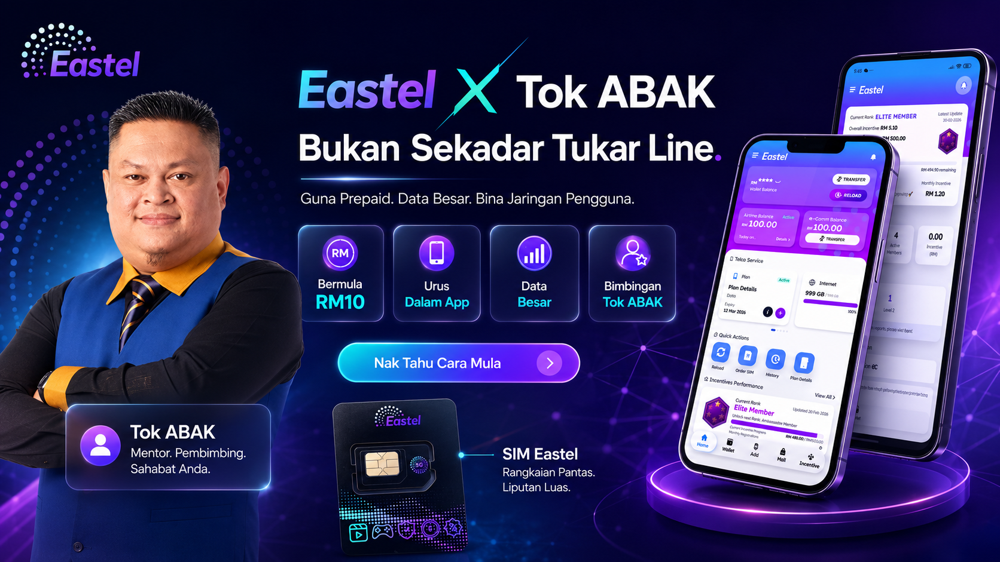
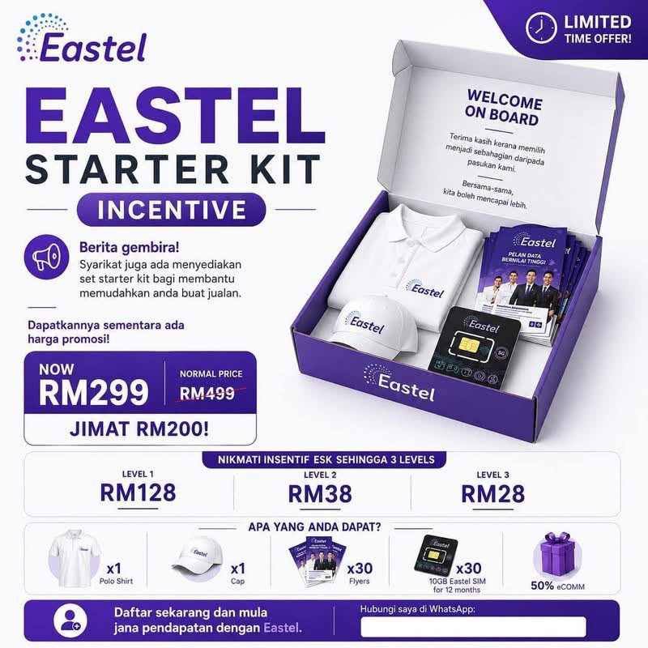

Eastel X Tok ABAK
Bukan Sekadar Tukar Line.
Bukan Sekadar Tukar Line.
Guna Prepaid. Bina Jaringan Pengguna.
Eastel ialah produk telco harian yang mudah difahami: SIM, data, reload dan app. Tok ABAK bantu korang mula dengan cara yang lebih tersusun — guna dulu, faham produk, kemudian bina jaringan pengguna.
Simulasi dan penerangan ini bukan janji hasil.

Bermula RM10
Data Besar
Dalam App
Bimbingan Tok ABAK
Mudah Difahami
Kenapa Eastel Mudah Difahami?
Produk ini dekat dengan hidup harian. Orang faham line, data, reload dan app — jadi penerangan boleh dibuat lebih natural.
Produk Harian
Line dan data ialah benda yang orang memang guna setiap bulan.
Mula Rendah
Orang boleh mula dengan kos yang lebih rendah sebelum bina keyakinan.
Ada Sistem
App dan struktur membantu pengguna serta builder bergerak lebih tersusun.
Boleh Guna Dulu
Pengalaman sendiri lebih kuat daripada skrip.

Bimbingan Tok ABAK
Mentor Console
01
02
03
04
Bukan sekadar ajak tukar line. Tok ABAK bantu korang susun gerak.
Fokusnya ialah faham produk, susun follow-up, jaga pengguna aktif dan bergerak ke milestone rank dengan lebih jelas.
Faham Produk
Faham apa yang sebenarnya dijual: prepaid, data, app dan penggunaan harian.
Guna Sendiri Dahulu
Cerita jadi lebih kuat bila korang sendiri dah rasa pengalaman produk.
Susun Follow-up
Belajar follow-up yang kemas, beradab dan tidak spam.
Aktifkan Jaringan
Pastikan pengguna tidak tidur, reload dijaga dan network terus bergerak.
Stats Console
Buka dashboard. Kira struktur sebelum bergerak.
Bukan untuk janji hasil, tapi untuk bantu korang faham apa berlaku bila pengguna aktif dan reload bulanan mula tersusun.
Cuba CalculatorTotal Reload
RM38,850
Potensi Komisen
RM2,950.50
Rank Progress

ESK sebagai launch kit — stok, bahan promosi dan identiti lapangan.
ESK Booster
Lihat ESK Booster
Launch kit untuk gerak kerja lapangan.
ESK membantu builder yang mahu bergerak lebih serius: ada stok SIM, bahan promosi dan momentum awal.
RM299 Promo30 SIM30 FlyersPolo ShirtCap
Lihat ESK Booster
Action
 Nak Tahu Cara Mula
Nak Tahu Cara Mula
Mula kecil. Faham produk. Bina jaringan.
Klik untuk tanya cara mula dengan Tok ABAK. Kita mula dengan faham produk dahulu, bukan terus kejar angka.